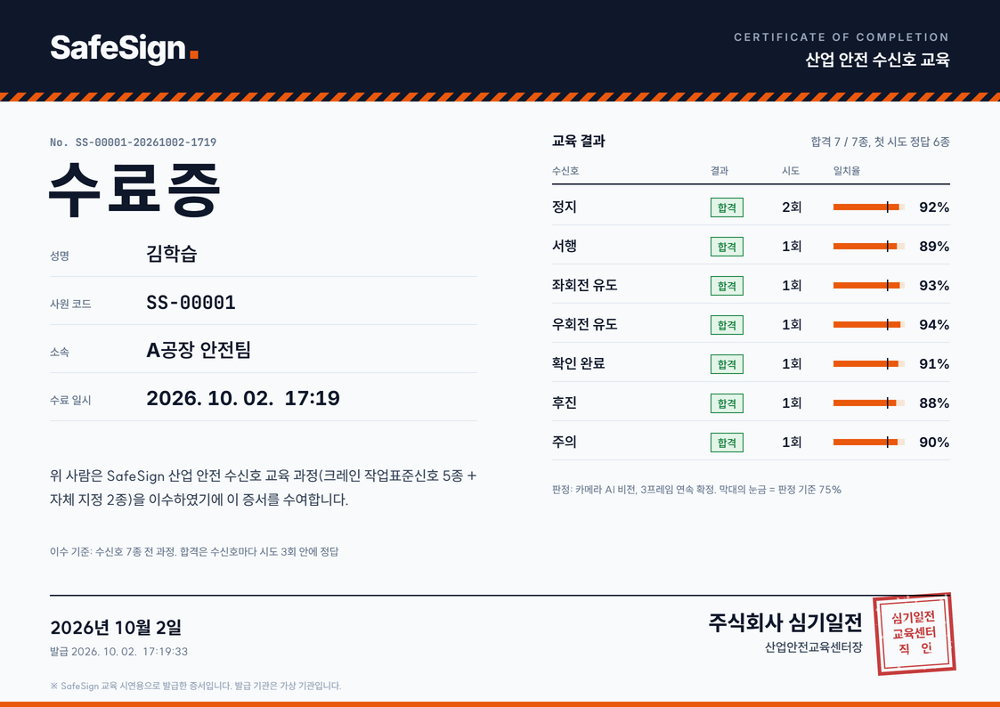

수신호 7종을 손 관절 21점으로 읽습니다
손목부터 다섯 손가락 끝까지 21점의 위치에서 특징 23개를 계산해 7종 중 하나로 판정합니다. 목록에서 신호를 고르면 영상이 그 손모양으로 이동합니다.
보고, 따라 하고, 판정받는 교육 키트
로봇 손이 먼저 보여 주고 학습자가 자기 손으로 해 봅니다. 틀리면 다시 시범하고, 맞히면 picar가 그 신호대로 움직입니다.
SafeSign 시스템 구성
판정 경로: 손 관절 21점 → 특징 23개 → SVM 분류
- 시범
AI Hand가 수신호 손모양을 만들어 보여 줍니다.
- 따라 하기
학습자가 카메라 앞에서 같은 손모양을 만들고 확인 버튼을 누릅니다.
- 판정
손 관절 21점을 읽어 7종 중 어느 신호인지 판정합니다.
- 피드백
정답이면 picar가 신호대로 움직이고, micro:bit가 O/X를 표시합니다.
- AI Hand
- 서보로 다섯 손가락을 움직입니다. 오답이면 같은 손모양으로 다시 시범합니다.
- 연결micro:bit BLE
- AI 비전 스테이션
- 모르는 손모양은 틀리게 답하지 않고 보류합니다.
- 판정 속도초당 약 26회
- 확정 규칙같은 결과 3프레임 연속
- picar
- 정답인 수신호대로 정지, 서행, 좌우회전, 후진하고 적색과 황색 LED를 켭니다.
- 연결RPi4B, Wi-Fi
수신호 7종
산업·건설 현장에서 공통으로 쓰는 크레인 작업표준신호 5종에 후진과 주의를 더했습니다.
검증 결과
틀린 답을 자신 있게 주지 않습니다
210번의 시도에서 다른 신호로 잘못 판정한 경우는 한 번도 없었습니다. 판정할 수 없는 손모양은 오답 대신 "다시 해 주세요"로 보류합니다.
측정: 2026-09-29, RPi5 + Camera Module 3, 팀원 3명 × 70시도. 판정 규칙은 운영과 같게 적용했습니다. 모델은 공개 데이터로만 학습했고 이 데이터는 학습에 쓰지 않았습니다. 판정 지연 등 실시간 지표는 교육장 시연에서 따로 측정합니다.

계정 하나로 교육장 키트와 수료증까지
- 회원가입가입하면 사원 코드(예: SS-00001)가 발급됩니다.
- 교육장 로그인교육장 키트에서 같은 계정으로 로그인해 7종을 교육받습니다.
- 이력과 수료증교육 결과는 사원 코드로 저장되고, 수료증을 이 사이트에서 다시 받습니다.
주식회사 심기일전
현장에서 수신호가 사람마다 달라 생기는 사고를 줄이는 것이 목표입니다. 교육을 화면 속 설명에서 꺼내, 로봇과 차량이 실제로 반응하는 체험으로 바꿉니다.
- 사업 분야
- 산업 안전 교육 키트, Physical AI
- 제품
- SafeSign 수신호 교육 키트
- 도입 대상
- 건설 현장 신호수, 조선소 크레인, 물류센터 지게차 유도, 공장 호이스트
연혁
SafeSign 개발 착수: 수신호 7종과 picar 피드백 구조 확정
AI Hand, micro:bit, picar 전 구간 통합 테스트
최종 판정 성능 측정 (210시도 오분류 0건)
교육 시연 예정
교육 도입 문의
교육 인원, 현장 종류, 희망 일정을 알려 주시면 시연 일정을 잡아 드립니다.
- 이메일
- contact@simgiiljeon.example
- 교육 시연
- 교육장 방문 시연 (SafeSign 키트 1세트)